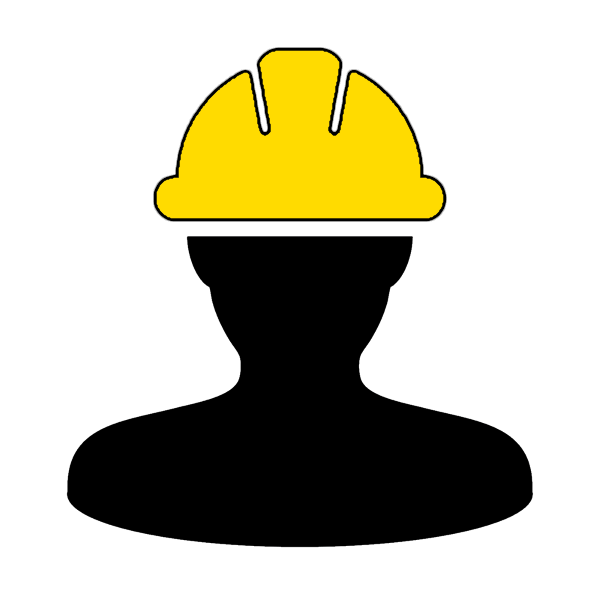

Find Your Digital Solution with The Cyber Architect
Stand out from the crowd with intuitive, flexible designs
A modern, streamlined web-design process
Planning/Design
Every good idea begins with a solid plan. Together, we will work to define a list of your project's specific requirements. We'll discuss goals, timelines, layouts, features, and everything else needed to turn your dreams into a reality. You have the vision, and The Cyber Architect has all the tools.
Implementation
While you're off tackling what your busy life has to offer, we'll be working hard to bring your design to life. Check-ins will be conducted frequently to ensure you stay deeply involved in the progress of your project. This part is the meat and potatoes of the web development lifecycle.
Feature Testing
During development, some bugs will surely creep into the mix. The testing phase ensures everything works as it's supposed to. Depending on the scope of the project, this can take from several days to several weeks. What's important, is that at the end of the day, everything works like a well-oiled machine.
Product Delivery
Once feature testing wraps up, it's off for delivery! We wrap your project up with all the necessary files, media, and documentation, and deliver it straight to you. But our relationship doesn't have to end there, as we offer several packages to our clients to keep their projects flourishing. The sky is truly the limit.
SERVICES
Web Design For The Modern Age

For The Cyber Architect, web design is far more than a job. It's a deeply creative and constantly evolving process. As the internet grows at a rapid pace, so are it's technologies. Now more than ever, a website needs to adapt to the often unpredictable and dynamic digital world.
We follow a "less-is-more" approach to all of our designs. However, that's not to be mistaken for a lower quality product. We believe in usability over complexity. We favor fluid, responsive designs over static, crowded webpages. We choose to adopt the most cutting-edge technologies, instead of just settling for something we find "comfortable".
When you choose The Cyber Architect, you're choosing to embrace the future of web design. Don't let your website get left behind.
Learn More
Optimize Your Search Results
What's a good website if your potential audience can't even find it? The internet is increasing exponentially in size, which means your chances of being seen over a more well established competitor isn't exactly strong.
To get better rankings on search engines, it's critical to understand how a search engine operates. This is a time-consuming process that utilizes several different techniques to achieve results. Fortunately, The Cyber Architect has devoted many sleepless nights to understand exactly what it takes to improve a website's visibility on the world's major search engines. Using tried and true methods, we can help put your website on the map to maximize your global reach.
Our SEO process can be a huge leap forward in your website's search results. Give it a try today.
Learn More
Three Reasons You Need A Stellar Website
"Quality is the best business plan, period." - John Lasseter of Pixar
Sales
Having an online presence is crucial to the survival of any business. No longer is your potential customer base stuck within the confines of your county. By presenting your business to the world, you're opening yourself up to more customers, which, as a natural result, will generate more sales.
Accessibility
People can see what you have to offer at any time, on any device, anywhere. Whether it's 3am, a holiday, or the weekend, your customers will have access to your business at al times. Not only is it convenient, but in the age of information, it is the expectation.
Credibility
You know the old saying - it's all about first impressions. When someone opens your website to see that it looks like it was designed in the 1990's, they're going to question the quality of your product. A good looking website goes a long way into giving your customers faith that they are getting involved with a reliable business.
Service Request
This could be the start of something beautiful...
Meet the Architect
If we're going to spend some time working together, it's only fair that you get to know the guy behind the business. My name is Austin, and I earned my Bachelor of Computer Science (BCS) in 2016 from a small-town Massachusetts college. My passion for computer science stretches all the way back to my middle school days, when I was making Sonic the Hedgehog "fanpages" in Microsoft Frontpage. Fortunately I moved past Frontpage, and during my studies I took a particular interest in making beautiful, accessible applications and websites. I focus on a simplistic, "less-is-more" approach to my designs. I believe that the days of cluttered websites, drenched in often unecessary information are far behind us. Anyone, young or old, should be able to navigate the internet with ease, and I want to help make that possible.
When I have some free time, you can usually find me playing guitar, brewing homemade beer, or spending time outdoors. I have always had a creative mind, and building websites has been a great outlet for that. I look forward to working with you!